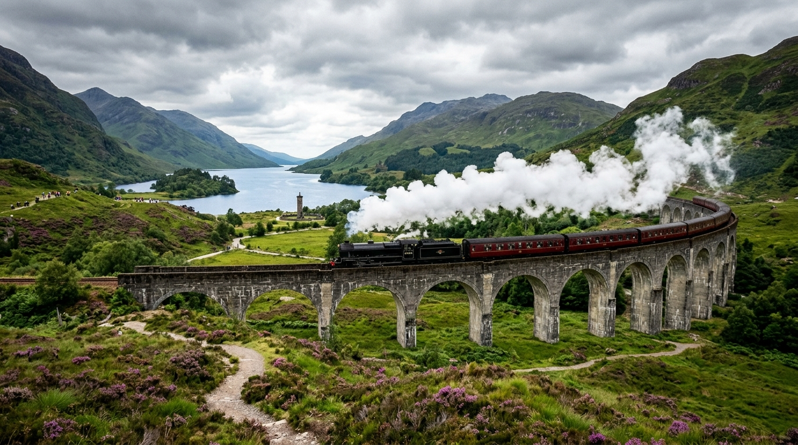

Keşfedilen Rotalar Arşivi
Rayların ritmiyle yazılmış birinci şahıs gezi günlükleri ve pratik rehberler
İnteraktif Rota Haritası
Rotaların geçtiği coğrafyalar, duraklar ve topoğrafya
İskoçya Yaylaları, Birleşik Krallık

Kalkış, Ben Nevis eteğinde tarihi garnizon kenti.
21 kemerli devasa kavis ve Shiel Gölü Kelt efsaneleri.
Büyük Britanya ana karasının en batıdaki demiryolu istasyonu.
Son durak; Atlantik kıyısında tütsülenmiş ringa balığı ve Skye feribotu.
Rayların ritmiyle yazılmış birinci şahıs gezi günlükleri ve pratik rehberler
Rotaların geçtiği coğrafyalar, duraklar ve topoğrafya